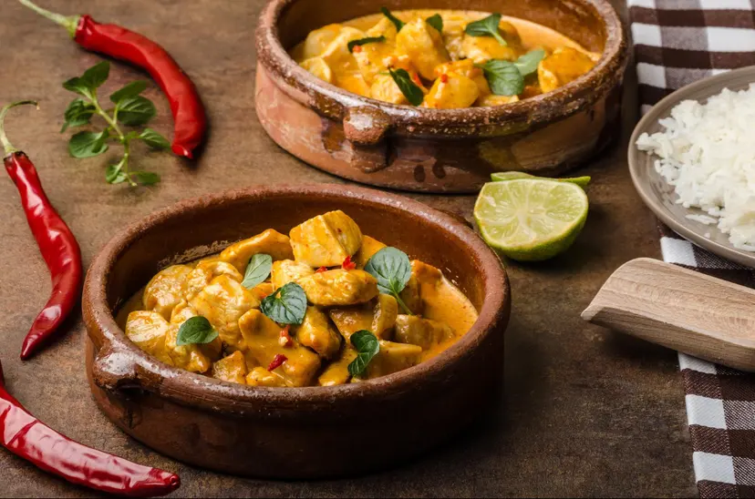

Butter Chicken

What is Indian Butter Chicken
Indian butter chicken consists of pieces of tandoori chicken cooked in a
tangy, velvety tomato cream sauce. Despite its rich flavors and hearty
consistency, butter chicken is a surprisingly low-carb meal.
Ingredients:
For chicken:
-
2 lb. boneless, skinless chicken breasts/skinless chicken thighs, cubed
- 2 tsp chili powder
- 2 tsp chili powder
- 2 tbsp olive oil
- 1 cup Plain yogurt or Greek yogurt
- 6 tbsp butter (2 tbsp melted)
- 2 tbsp garlic paste
- ½ tsp turmeric
- Salt
For sauce:
- 1 small yellow onion, diced
- 2 tsp garam masala
- 1 tsp ground cumin
- 1 tsp cayenee pepper
- 1 tbsp freshly grated ginger
- 2 cloves garlic, minced
- 1 cinnamon stick
- 1 14 oz can tomato sauce
- 1 cup heavy cream
- 1 cup water
- Salt and pepper
Steps:
-
Place chicken in a glass dish or bowl with lemon juice, chili powder,
and a good pinch of salt. Toss to coat chicken entirely; cover dish and
refrigerate for at least 1 hour
-
Combine yogurt, garlic paste, turmeric, butter, and oil in a medium
bowl. Season with salt and pepper. Pour yogurt mixture over chicken,
cover, and return to the refrigerator to marinate for another 3 to 4
hours.
- Preheat oven to 400°F.
-
Place chicken on skewers. Place skewers in a 9x13 inch baking dish and
bake for 20 minutes at this high heat, until almost cooked through.
-
Meanwhile, melt 2 tbsp of butter in a large pot, then add the onion,
garam masala, remaining teaspoon of chili powder, cumin, ginger, garlic,
cayenne, cinnamon, salt and pepper. Sauté over medium heat until
fragrant.
- Add the tomato sauce, water, and cream, and bring to a simmer.
-
Transfer the chicken to the pot, cover, and simmer for another 10-15
minutes, or until chicken is cooked through.
- Stir in the last 2 tablespoons of butter and season to taste.
Go to top of the page
Go to the home page